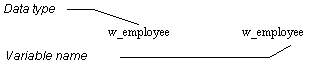

When you build an application, you may want to display several windows that are identical in structure but have different data values.
For example, you may have a w_employee window and want to display information for two or more employees at the same time by opening multiple copies (instances) of the w_employee window.
You can do that, but you need to understand how PowerBuilder stores window definitions.
When you save a window, PowerBuilder actually generates two entities in the library:

By duplicating the name of the datatype and variable, PowerBuilder allows new users to access windows easily through their variables while ignoring the concept of datatype.
To open a window, you use the Open function, such as:
Open(w_employee)
This actually creates an instance of the datatype w_employee and assigns it a reference to the global variable, also named w_employee.
As you have probably noticed, when you open a window that is already open, PowerBuilder simply activates the existing window; it does not open a new window. For example, consider this script for a CommandButton's Clicked event:
Open(w_employee)
No matter how many times this button is clicked, there is still only one window w_employee. It is pointed to by the global variable w_employee.
To open multiple instances of a window, you declare variables of the window's type.